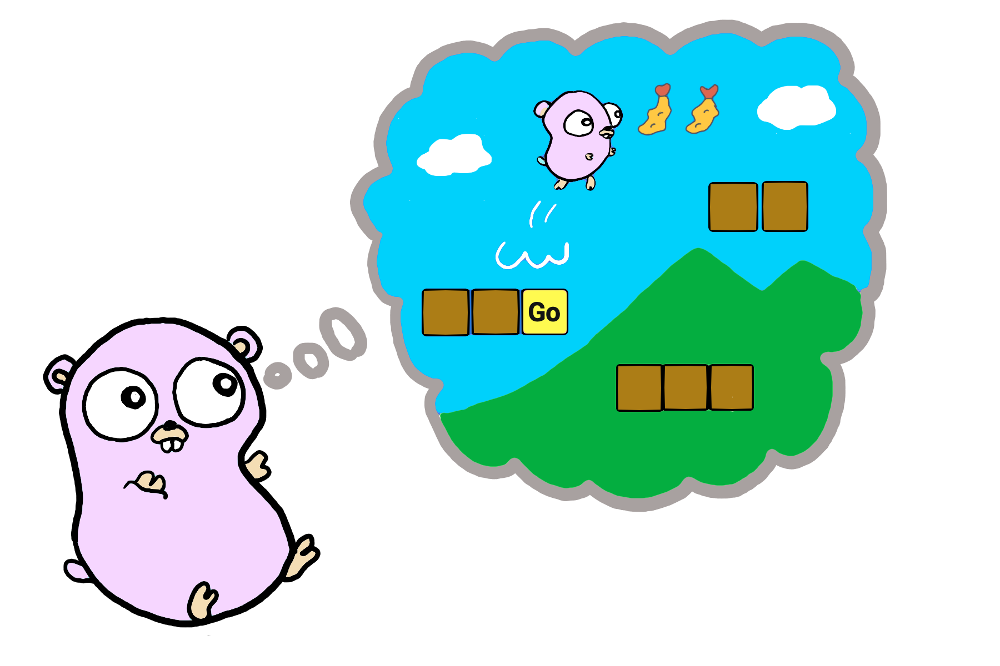
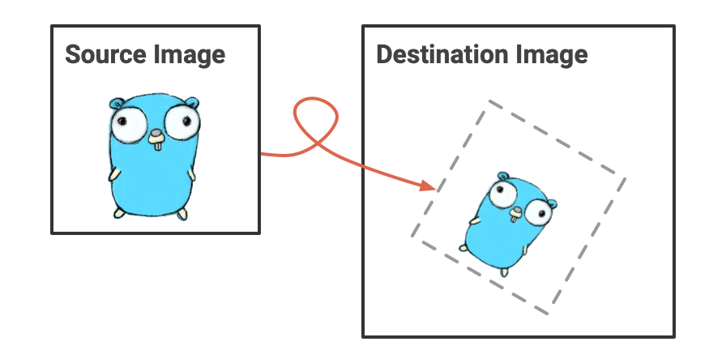
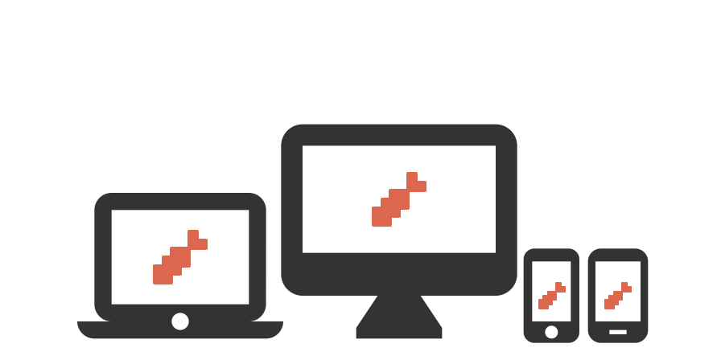
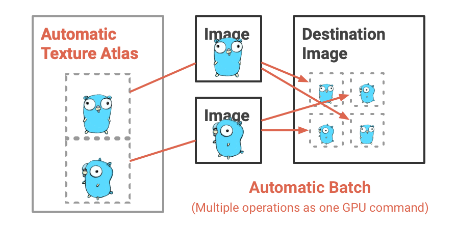
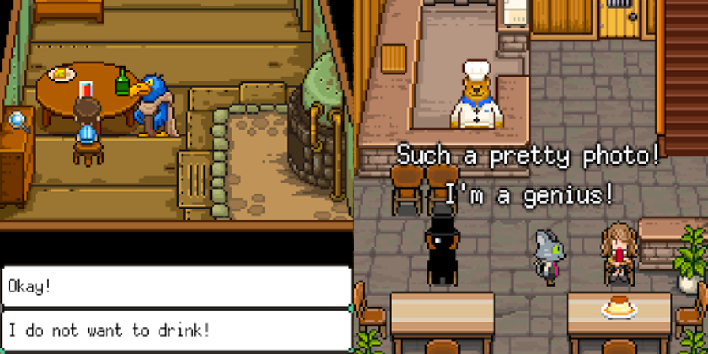

EbitenA dead simple 2D game library in Go
Ebiten (/ebíteɴ/) is an open-source game library, with which you can develop 2D games with simple API for multi platforms in the Go programming language.
Ebiten (読み: えびてん) はプログラミング言語 Go で書かれたオープンソースのゲームライブラリです。シンプルな API を使って、マルチプラットフォームな 2D ゲームを開発することができます。

What's Ebiten?
Ebiten の特徴
Dead Simple
とてもシンプル

Most rendering operations are represented as drawing an image to an image. Everything is an image: the screen, data from an image file and an offscreen are represented as image objects.
ほとんどの描画命令は画像から画像への描画として表現されます。画面、画像ファイル、オフスクリーンなど、あらゆるものが画像として表現されます。
Multi Platforms
マルチプラットフォーム

Ebiten games work on various platforms like desktops (Windows, macOS, Linux, and FreeBSD), web browsers (GopherJS and WebAssembly), and mobiles (Android and iOS).
Ebiten のゲームは様々な環境で動きます。デスクトップ (Windows、macOS、Linux、FreeBSD)、 Web ブラウザ (GopherJS と WebAssembly)、モバイル (Android と iOS) で動きます。
High Performance
高いパフォーマンス

While Ebiten's drawing API is very simple, Ebiten games run very fast with GPU power. Multiple images are integrated into a texture atlas internally. Multiple drawing operations are integrated into a batch automatically when possible.
Ebiten の API はシンプルですが、ゲームは GPU を活かして高速に実行されます。複数の画像は内部でテクスチャアトラスにまとめられます。複数の描画命令は、可能な限り自動的にバッチにまとめられます。
Production Ready
商用レベルのゲーム

Ebiten has capability to develop product-level games. Bear's Restaurant, that reached 400K downloads, is a mobile application in Ebiten.
Ebiten は商用レベルのゲームを作ることができます。くまのレストランは、 40 万ダウンロードを達成した Ebiten 製のモバイルゲームです。
Playable Examples
遊べるサンプル
2048

Blocks

Flappy

30+ More Examples
その他サンプル 30 以上

Community
コミュニティ
License
ライセンス
Ebiten is licensed under the Apache License 2.0.
Ebiten は Apache License 2.0 で公開されています。
Go Gopher by Renee French is lincensed under the Creative Commons Attribution 3.0 License.
Go Gopher は Renee French 氏によって製作され、 Creative Commons Attribution 3.0 License で公開されています。
The content of this site is licensed under the Creative Commons Attribution 4.0 License.
このサイトのコンテンツは Creative Commons Attribution 4.0 License で公開されています。